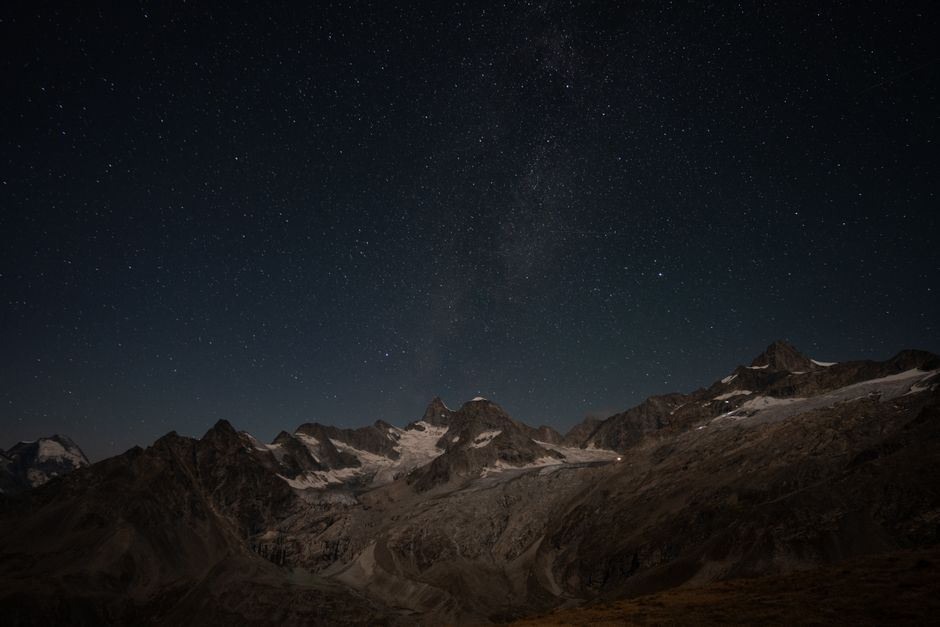

GIS og romlig analyse
Bearbeiding og analyse av geografiske data, kartproduksjon og kartlegging av romlige mønstre.
DATA / KART / ANALYSE
GIS, FJERNMÅLING OG MILJØANALYSE
Jeg arbeider med geografiske data, GIS og fjernmåling for å undersøke miljø og endringer i landskapet.
Kompetanse
Metoden avhenger av stedet og spørsmålet. Jeg legger vekt på ryddige data, gode analyser og resultater som kan brukes videre.
Bearbeiding og analyse av geografiske data, kartproduksjon og kartlegging av romlige mønstre.
DATA / KART / ANALYSEBruk av satellittbilder til å undersøke areal, vegetasjon og vann, samt utforsking av dronebasert kartlegging.
JORDOBSERVASJONFor avgrensede oppgaver kan jeg lage arbeidsflyter som gjør databehandling og analyse mer effektiv og repeterbar.
ARBEIDSFLYTERSigrøn / under utvikling
Egne prosjekter der jeg prøver ut geospatiale data og analysemetoder i praksis.

Pågående prosjektJeg undersøker hvordan kart og miljødata kan bidra til å finne områder med mindre lysforurensning.
 Pågående utforskning
Pågående utforskningJeg undersøker vannkvalitet og cyanobakterier i Goksjø ved hjelp av satellittdata, kart og lokale observasjoner.
Et nytt prosjekt med multispektrale dronebilder. Jeg skal undersøke variasjoner i plantevekst med vegetasjonsindekser, GIS og automatisert analyse.
Kontakt
Jeg er åpen for prosjektoppdrag, samarbeid og relevante stillinger.
Beskriv gjerne prosjektet, spørsmålet eller muligheten kort.